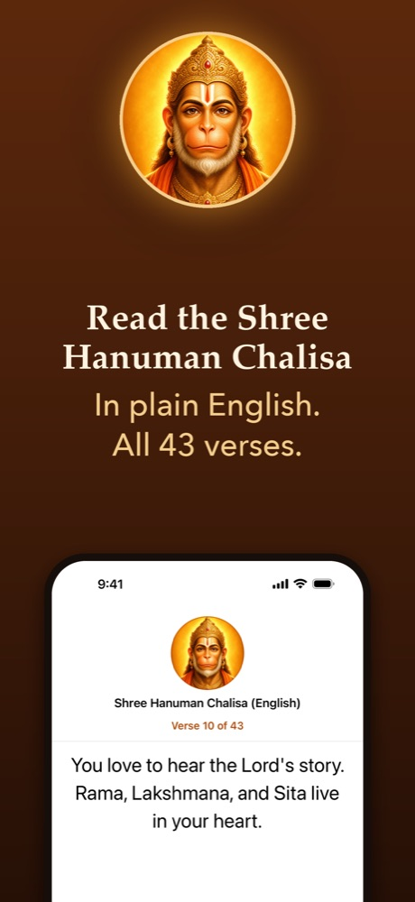
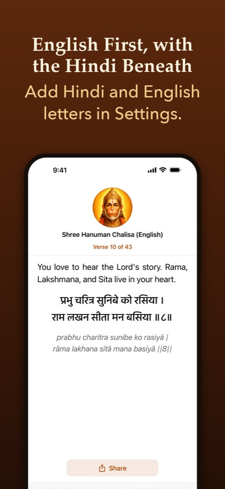
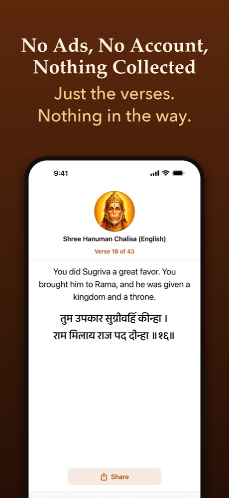

Shree Hanuman Chalisa (English)
The Hanuman Chalisa in plain English, one verse at a time. A free iPhone and iPad app with all 43 verses, no ads and no account.
What Does the App Do?
Open it and you are on the verse where you stopped. Swipe left, or tap Next, and the next verse comes up. Each verse is in plain English, short enough to read in one breath. The Hindi, and the same Hindi in English letters, are two switches in Settings. Both start off, so the first thing you see is the English.
Why Is It Text Only?
It is made for reading, so the words are the whole app. There is no audio. The letters follow your iPhone's Text Size, up to the largest sizes, and it works with no connection.
Who Is It For?
- People who recite the Hanuman Chalisa from memory and want the words in front of them.
- People who grew up hearing it and cannot yet read Devanagari.
- People learning it with a parent or grandparent, one verse a day.
What Does It Leave Out?
No ads. No account and no sign-in. No tracking: it collects nothing about you. It does not ask for a rating in the middle of your prayer. It has no audio.
The App at a Glance
- Price
- Free, with no in-app purchases
- Works on
- iPhone and iPad, iOS 17 or later
- Verses
- All 43: two opening dohas, forty chaupais, one closing doha
- Languages
- English first; Hindi (Devanagari) and Hindi in English letters, optional
- Offline
- Yes, the whole hymn is inside the app
- Audio
- None. Text only
- Data collected
- None
- Made by
- Chirag Mirani
Screenshots



Questions People Ask About the App
Is the Hanuman Chalisa App Free, With No Ads?
Yes. Shree Hanuman Chalisa (English) is free. It has no ads, no account, no sign-in and no in-app purchases, and it collects nothing about you.
Does the Hanuman Chalisa App Work Offline?
Yes. The whole hymn is inside the app, so it works with no connection from the first time you open it.
Does the App Have Audio?
No. It is text only, made for reading. There is no recording to play, and nothing to download first.
Can I Read the Hanuman Chalisa in Hindi in This App?
Yes. Every verse shows the plain-English meaning first. In Settings you can switch on the Hindi in Devanagari, the script the hymn was written in, and the same Hindi words in English letters. Both start off.
How Many Verses Does the App Have?
All 43: two opening dohas, forty chaupais and one closing doha. The word chalisa comes from the Hindi chalis, which means forty, for the forty chaupais.
Which iPhones and iPads Does the App Run On?
Any iPhone or iPad that runs iOS 17 or iPadOS 17 or later. The letters follow your Text Size setting, up to the largest sizes.
What Does the App Collect About Me?
Nothing. It remembers the verse you last read and your choices in Settings, and keeps them on your phone only. We cannot see them. The privacy policy has the details.
Who Wrote the Text, and Who Wrote the English?
The hymn is attributed to the poet Goswami Tulsidas, who wrote it in the 16th century in Awadhi, an old form of Hindi. The English meanings were written for this app. They are plain and short, not a scholar's commentary.
Prefer the Web?
The same hymn is on this site, all 43 verses on one page, free in any browser. Read the Hanuman Chalisa on the web.
Questions or a Correction?
See the help page, or email submartingaleoptions+hanumanchalisa@gmail.com.
The Hanuman Chalisa is a devotional text, not medical advice. It does not promise any result. This is an independent reader, not an official temple or priest's app.